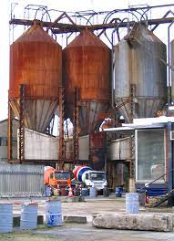

Sommaire
Patrimoine CulturelPatrimoine Architectural
En Europe
Ailleurs
Patrimoine Industriel
Patrimoine Maritime
Culturel
Le patrimoine culturel (on parle également de patrimoine historique) recouvre les biens, matériels ou immatériels, ayant une importance artistique ou historique
Le patrimoine architectural
Le patrimoine architectural est l'ensemble des constructions humaines qui ont une grande valeur parce qu'elles caractérisent une époque, une civilisation ou un événement et que, à cause de cette valeur, nous voulons transmettre aux générations futures.

En Europe
Les politiques de « conservation intégrée » ont été définies le 3 octobre 1985 : la Convention pour la sauvegarde du patrimoine architectural de l’Europe dite « Convention de Grenade »1 conclue à cette occasion est entrée en vigueur le premier décembre 1987
Ailleurs
Cette section est vide, insuffisamment détaillée ou incomplète.
Le patrimoine industriel
Le patrimoine industriel comprend l'ensemble des témoignages matériels (paysages, sites de production tels usines, ateliers, moulins, documents, machines, outils, etc.) ... et immatériels (savoir-faire) des processus de production industrielle.
Le patrimoine maritime.
Le patrimoine maritime est une notion relativement récente1, liée à l'émergence de patrimoines connexes comme le patrimoine industriel. On peut le définir ainsi : « Le patrimoine maritime comprend l’ensemble des éléments matériels ou immatériels liés aux activités humaines qui ont été développées dans le passé, récent ou plus lointain, en relation avec les ressources et le milieu maritimes.